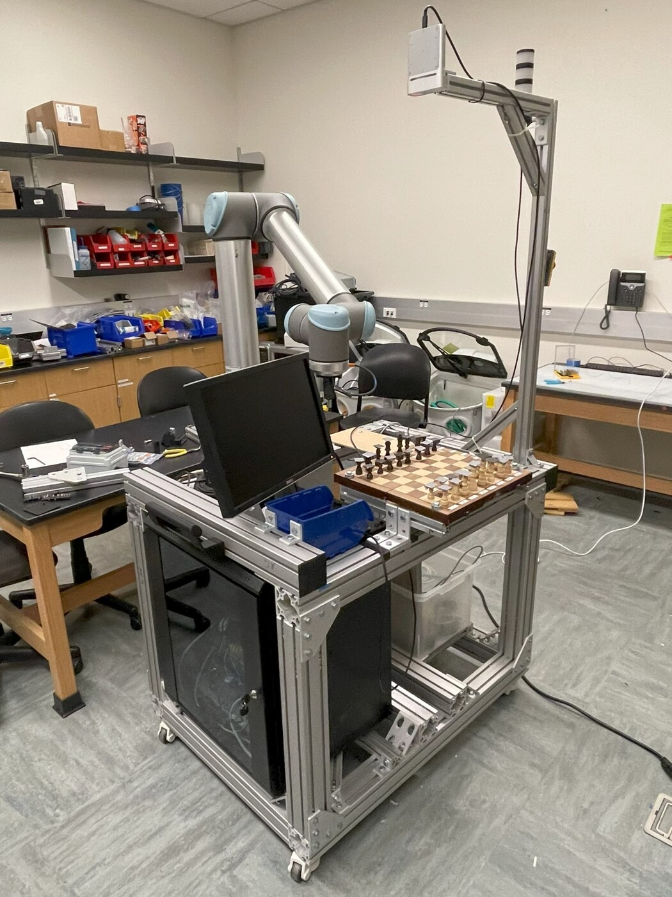

Chess-playing robot
An industrial robot arm that was headed for e-waste, rebuilt to play chess.

Why I built it
A set of industrial UR10 robot arms was about to be thrown out as e-waste, so I organized getting them donated to the Foothill College engineering club, and then we rebuilt one to play chess.
What it does
- A rebuilt UR10 arm that plays on a real board.
- Python software that keeps track of the game, asks Stockfish for a move and then moves the arm to play it.
- Public demos. It beat everyone who played it, and one of them was rated 2700.
How it works
- Your moveSomeone types the player's move in at the computer.
- Board stateThe software keeps track of the game and checks that the move is legal.
- StockfishThe chess engine picks a reply.
- The armThe UR10 picks up the piece and plays it on the board.
What was hard
Getting an arm running
The arms came to us as surplus, and one had to be rebuilt before it could play anything.
A bigger team
The team went from 4 people to about 20 while I was leading it.